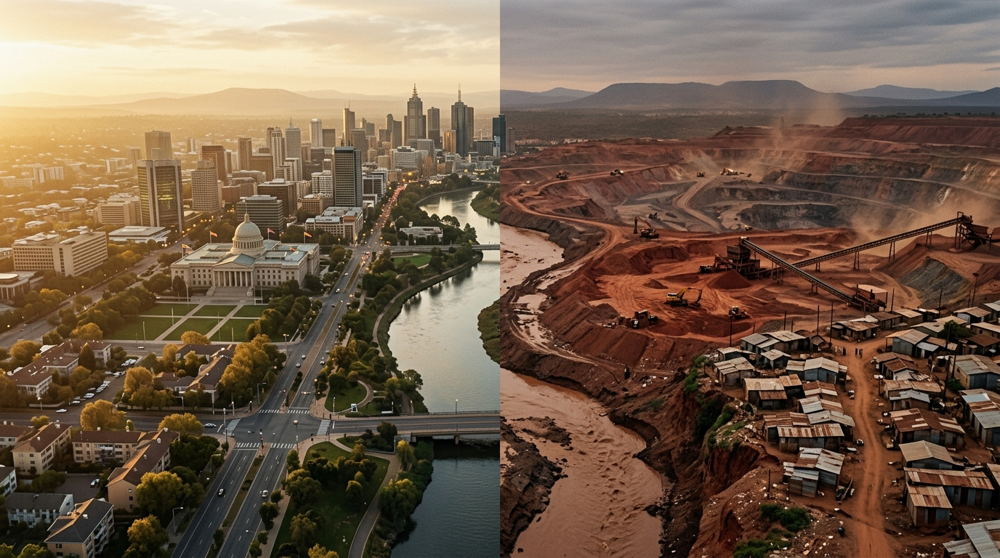

Our Diagnosis
We learned to minimize damage, not to regenerate.
Conflict between nations has turned into an endless struggle between rich and poor within all 195 countries.
This struggle keeps non-westernized territories trapped under the weight of three major plagues: war, famine, and banditry.